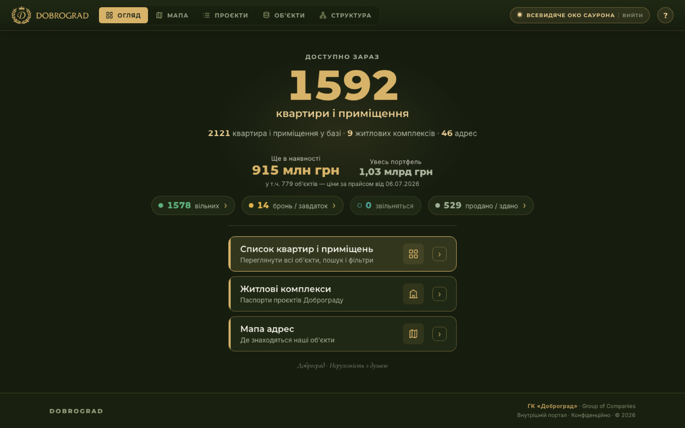
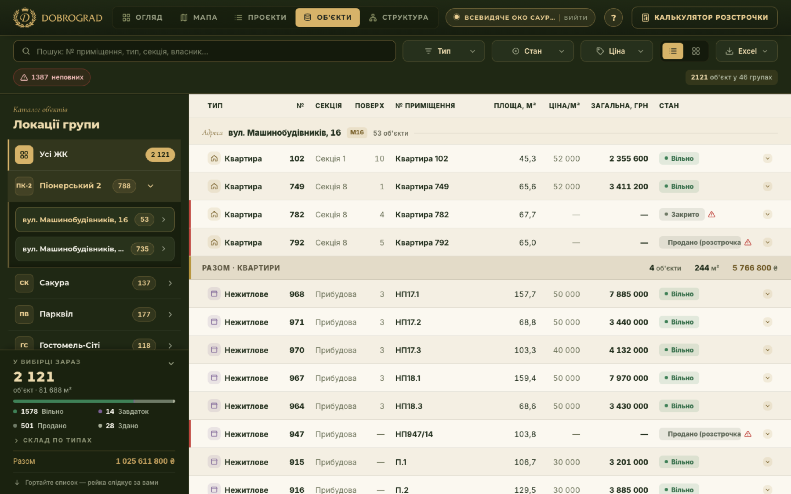
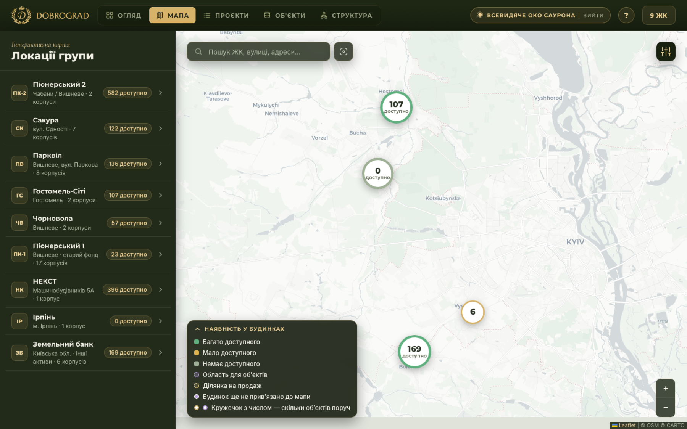

Internal product · Dobrograd
Before this, availability lived in a dozen spreadsheets that disagreed with each other. A sales manager answering “is unit 749 still free, and at what price?” had to call someone. This portal replaced that with a single registry the whole company reads from — and it is the system I use every day to run the operation.



The asset registry and the price list were maintained by different people and did not match. Rather than pick a winner globally, the import marks each unit with where its number came from, so a wrong price is traceable to its source instead of quietly overwriting a right one.
Everything upstream is Excel and will stay Excel. So the portal is built around converters: the registry and the price list are regenerated from the source files, never edited by hand. That way the system never drifts from the documents the company signs.
A sales manager should not see the full portfolio valuation, and a viewer should not be able to change anything. Access is role-based, and each role gets its own guided tour on first open — the people using this are not going to read documentation.
The hardest constraint was not technical. Every screen had to survive being opened by someone who does not use software for a living: one big number, plain words, large targets, no jargon and no charts where a sentence will do.
The live portal is not public and there is no link to it on this page. It holds the company's real asset registry and pricing, and its access control is prototype-grade — good enough to keep a passer-by out, not to withstand a determined one. Publishing the address from an indexed page would remove the only protection it currently has. The screenshots above are from a local copy; the organisational chart the portal also contains is deliberately not shown, because it names real employees.
Order is not a personality trait. It is something you build, and then someone has to maintain the thing that holds it.